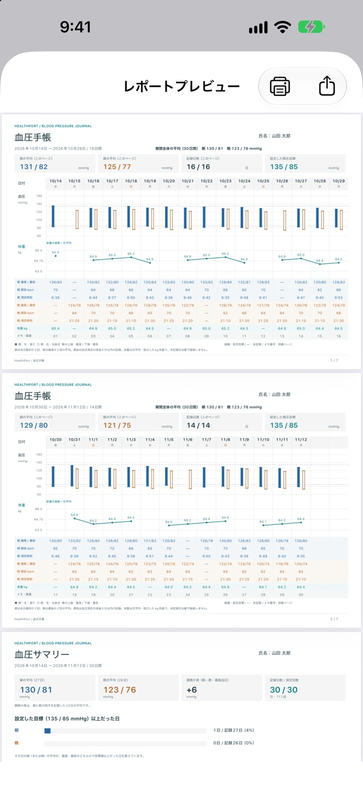
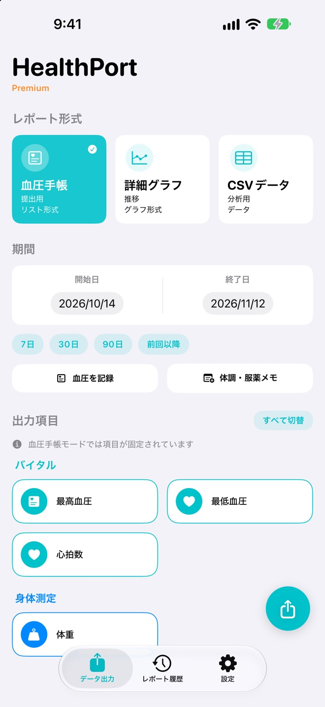
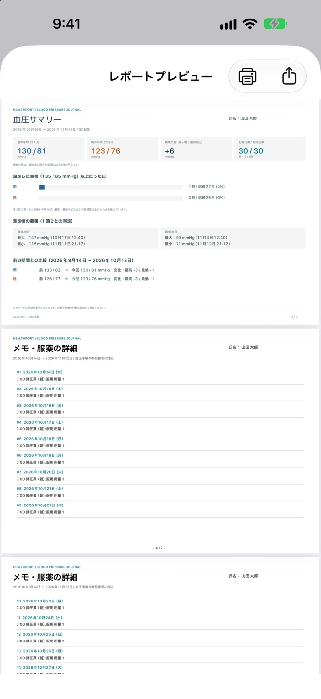
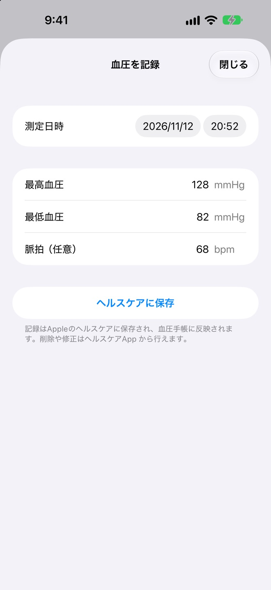
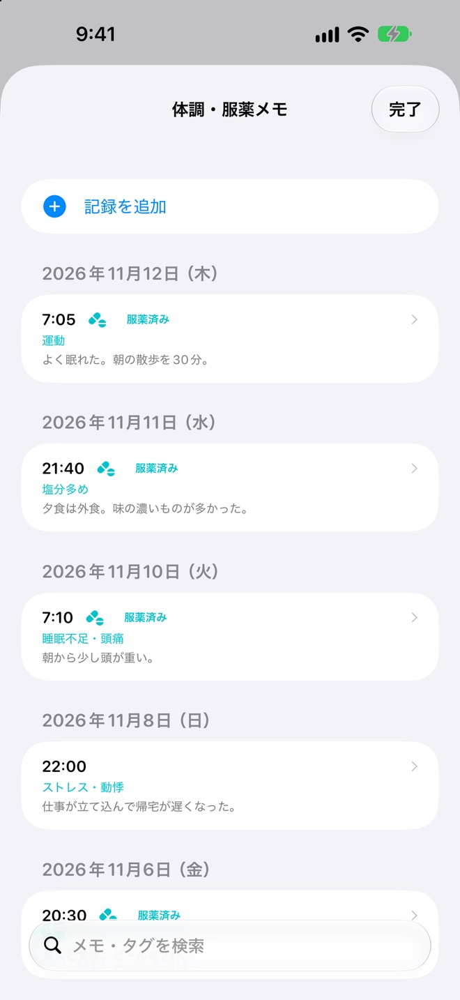
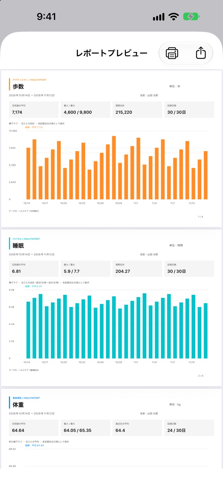
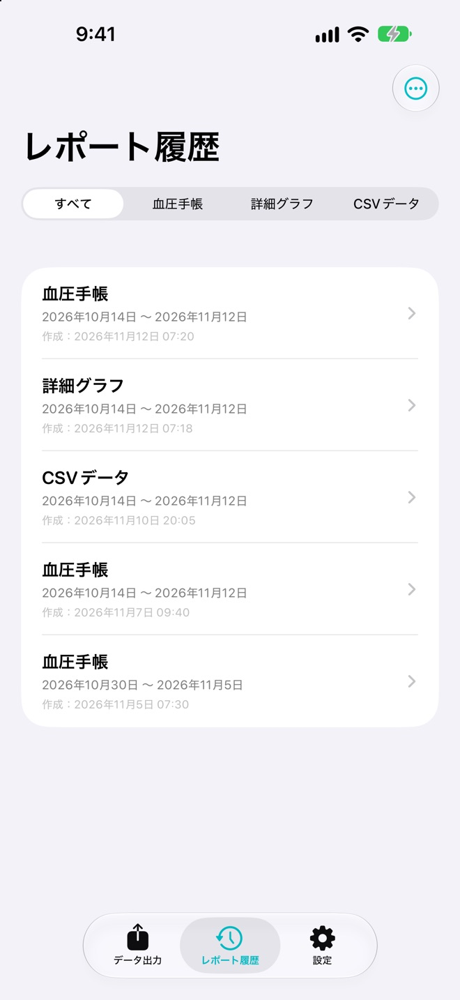

朝と晩の血圧が、
ひと目でわかる手帳
朝・晩の血圧を日付ごとに並べた一覧と、血圧・体重の推移グラフを同じページにまとめます。A4 横で、1 ページに 16 日分です。
- 血圧の目標値（初期値 135/85）をグラフに破線で表示
- 測定時刻・脈拍・体重も同じ列に
- 体調メモと服薬の記録を、日付ごとに添付

「次の診察までに、血圧の記録をまとめてきてください」。そう言われて、毎日の数値を手書きで写していませんか。HealthPort は、ヘルスケアに記録された血圧・脈拍・体重を、主治医にそのまま渡せる「血圧手帳」の PDF にまとめるアプリです。期間を選んでボタンを押すだけで、レポートができあがります。
App Store で見るiPhone（iOS 26.2 以上）／アカウント登録は不要です

ヘルスケアにたまった血圧を、朝・晩に分けて日付順に並べます。紙の手帳に写す手間も、画面を医師に見せる手間もありません。
朝は各日の最初の 2 回、晩は最後の 2 回の測定を平均。前後 5 分以内の脈拍も自動で対応づけます。
レポートの作成はすべて端末の中で行います。外部のサーバーへデータを送ることはなく、アカウント登録もいりません。
普段は血圧を測るだけ。まとめるのは、診察の前に 1 回だけです。
ヘルスケアと連携した血圧計ならそのまま。連携していない血圧計でも、測った値をアプリから入力できます。
前回の診察以降、直近 30 日など、まとめたい期間を選んでボタンを押すだけで、血圧手帳の PDF ができあがります。
プレビューからそのまま印刷できます。ファイルのまま共有したり、あとから履歴で開き直したりもできます。
血圧手帳の PDF を中心に、入力・お知らせ・体調のメモまでそろっています。
朝・晩の血圧を日付ごとに並べた一覧と、血圧・体重の推移グラフを同じページにまとめます。A4 横で、1 ページに 16 日分です。

血圧手帳の先頭に、期間全体のまとめのページが付きます。医師が最初に見たい数字を、1 枚目に集めました。

血圧計がヘルスケアと連携していなくても大丈夫です。最高血圧・最低血圧・脈拍を入力すると、ヘルスケアに保存され、そのまま血圧手帳に反映されます。

数値だけではわからない「その日の様子」を、タグと短いメモで残せます。服薬したかどうかも記録でき、レポートに日付ごとに添えられます。

選んだ項目を 1 ページずつグラフにした PDF を作れます。平均・最小 / 最大・記録日数もページごとにまとめます。

作成した PDF・CSV は、作成日時と期間つきでレポート履歴に残ります。前回の診察で渡したものを見返したり、もう一度印刷したりするのもすぐです。

設定を切り替えるだけで、同じ内容の PDF を英語で出力。海外の医療機関や渡航先での提出に使えます。
できあがったレポートは、プレビューの画面から直接プリンタで印刷できます。ファイルとして共有することもできます。
ショートカットから「血圧レポートを作成」を呼び出して、血圧手帳を作れます。Pro 版では「直近 30 日間」「先月」も指定できます。
主治医から指示された血圧の目標値に変えると、グラフの破線とサマリーの「目標値以上の日数」に反映されます（Pro 版）。
7 日・30 日・90 日に加えて「前回以降」を用意。前回レポートにした期間の翌日から今日までを、すぐに選べます。
画面の外観は、端末に合わせる「自動」のほか、「ライト」「ダーク」から選べます。
ヘルスケアから読み取ったデータでのレポートの作成は、すべて端末の中で行います。開発者のサーバーへデータを送ることはなく、アカウント登録も、解析や広告の仕組みもありません。読み取る項目は、ヘルスケアの設定で 1 つずつ選べます。
直近 7 日間の血圧手帳は、お支払いなしで作れます。長い期間やほかの項目もまとめたくなったら、買い切りの HealthPort Pro へ。
お支払いなしで使える範囲
買い切り（1 回のお支払い）
購入した HealthPort Pro は、同じ Apple アカウントのほかの端末でも「購入を復元する」で使えます。
HealthPort は医療機器ではありません。診断や治療の判断は、必ず医師にご相談ください。